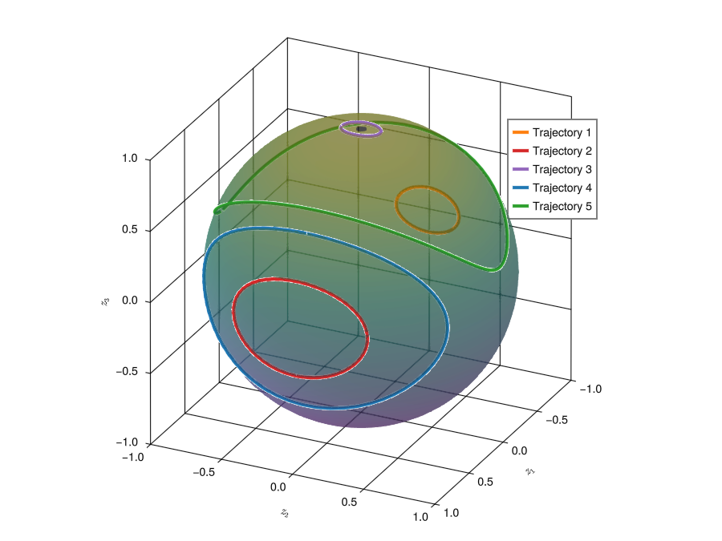
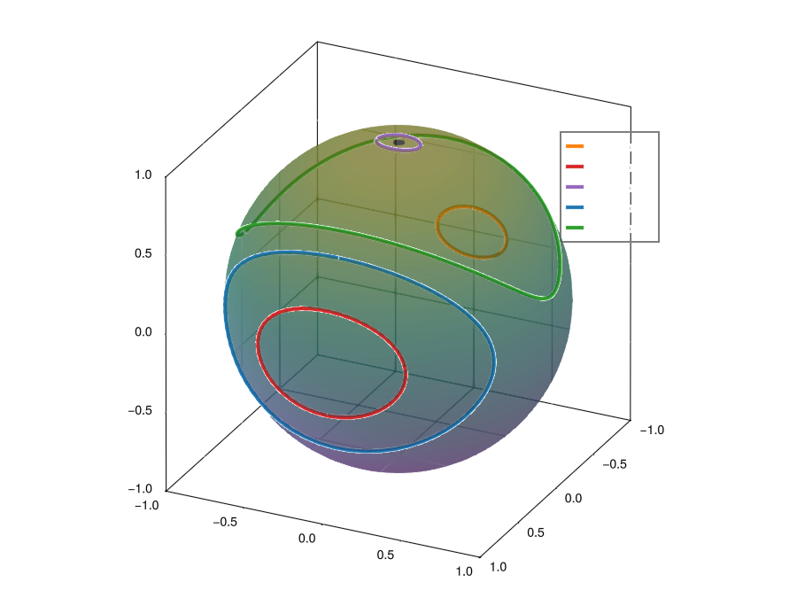
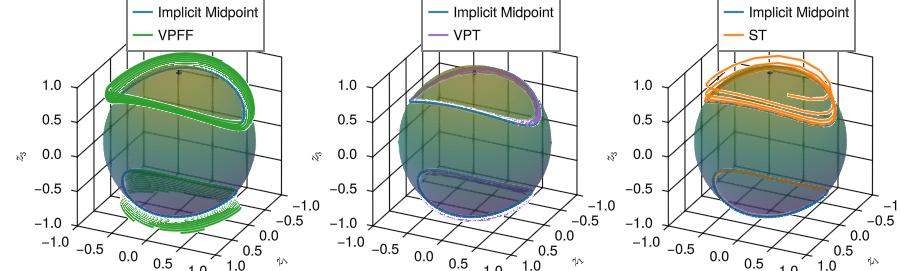
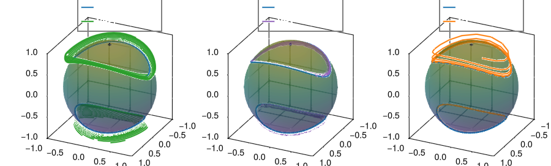

The Volume-Preserving Transformer for the Rigid Body
Here we train a volume-preserving feedforward neural network, a standard transformer and a volume-preserving transformer on a rigid body [1, 27]. These are also the results presented in [4]. The ODE that describes the rigid body is:
\[\frac{d}{dt}\begin{pmatrix} z_1 \\ z_2 \\ z_3 \end{pmatrix} = \begin{pmatrix} Az_2z_3 \\ Bz_1z_3 \\ Cz_1z_2 \end{pmatrix}.\]
In the following we use $A = 1,$ $B = 1/2$ and $C = -1/2.$ For a derivation of this equation see [4].
We first generate the data. The initial conditions that we use are:
\[\mathtt{ics} = \left\{ \begin{pmatrix} \sin(\alpha) \\ 0 \\ \cos(\alpha) \end{pmatrix}, \begin{pmatrix} 0 \\ \sin(\alpha) \\ \cos(\alpha) \end{pmatrix}: \alpha = 0.1\mathtt{:}0.01\mathtt{:}2\pi \right\}.\]
We build these initial conditions by concatenating $\mathtt{ics}_1$ and $\mathtt{ics}_2$:
const ics₁ = [[sin(val), 0., cos(val)] for val in .1:.01:(2*π)]
const ics₂ = [[0., sin(val), cos(val)] for val in .1:.01:(2*π)]
const ics = [ics₁..., ics₂...]We now generate the data by integrating with:
const tstep = .2
const tspan = (0., 20.)The rigid body is implemented in GeometricProblems:
using GeometricIntegrators: integrate, ImplicitMidpoint
using GeometricProblems.RigidBody: odeproblem, odeensemble, default_parameters
ensemble_problem = odeensemble(ics; tspan = tspan, tstep = tstep, parameters = default_parameters)
ensemble_solution = integrate(ensemble_problem, ImplicitMidpoint())
dl_cpu = DataLoader(ensemble_solution; suppress_info = true)We plot the trajectories for some of the initial conditions to get and idea of what the data look like:
const n_trajectories_to_plot = 5
indices = Int.(ceil.(size(dl_cpu.input, 3) * rand(n_trajectories_to_plot)))
trajectories = [dl_cpu.input[:, :, index] for index in indices] 
The rigid body has two conserved quantities:
- one conserved quantity is the Hamiltonian of the system: $H(z_1, z_2, z_3) = \frac{1}{2}\left( \frac{z_1^2}{I_1} + \frac{z_2^2}{I_2} + \frac{z_3^2}{I_3} \right),$
- the second one is the quadratic invariant: $I(z_1, z_2, z_3) = z_1^2 + z_2^2 + z_3^2.$
The coefficients $I_1,$ $I_2$ and $I_3$ can be obtained through
\[\begin{aligned} A = \frac{I_2 - I_3}{I_2I_3}, \\ B = \frac{I_3 - I_1}{I_3I_1}, \\ C = \frac{I_1 - I_2}{I_1I_2}. \end{aligned}\]
The second conserved invariant $I(\cdot, \cdot, \cdot)$ is visualized through the sphere in the figure above. The conserved Hamiltonian is the reason for why the curves are closed.
The rigid body has Poisson structure [1], but does not have canonical Hamiltonian structure. We can thus not use SympNets or symplectic transformers here, but the ODE is clearly divergence-free. We use this to demonstrate the efficacy of the volume-preserving transformer. We set up our networks:
# hyperparameters concerning the architectures
const sys_dim = size(dl_cpu.input, 1)
const n_heads = 1
const L = 3 # transformer blocks
const activation = tanh
const resnet_activation = tanh
const n_linear = 1
const n_blocks = 2
const skew_sym = false
const seq_length = 3
arch_vpff = VolumePreservingFeedForward(sys_dim, n_blocks * L, n_linear, resnet_activation)
arch_vpt = VolumePreservingTransformer(sys_dim, seq_length;
n_blocks = n_blocks,
n_linear = n_linear,
L = L,
activation = resnet_activation,
skew_sym = skew_sym)
arch_st = StandardTransformerIntegrator(sys_dim; n_heads = n_heads,
transformer_dim = sys_dim,
n_blocks = n_blocks,
L = L,
resnet_activation = resnet_activation,
add_connection = false)Note that we set the keyword skew_sym to false here. This is different from what we did in [4], where it was set to true[1]. We allocate the networks on GPU:
using CUDA
backend = CUDABackend()T = Float32
dl = DataLoader(dl_cpu, backend, T)
nn_vpff = NeuralNetwork(arch_vpff, backend, T)
nn_vpt = NeuralNetwork(arch_vpt, backend, T)
nn_st = NeuralNetwork(arch_st, backend, T)
(parameterlength(nn_vpff), parameterlength(nn_vpt), parameterlength(nn_st))(135, 180, 189)We now train the various networks. For this we use AdamOptimizerWithDecay:
const n_epochs = 500000
const batch_size = 16384
const feedforward_batch = Batch(batch_size)
const transformer_batch = Batch(batch_size, seq_length, seq_length)
const opt_method = AdamOptimizerWithDecay(n_epochs, T; η₁ = 1e-2, η₂ = 1e-6)
o_vpff = Optimizer(opt_method, nn_vpff)
o_vpt = Optimizer(opt_method, nn_vpt)
o_st = Optimizer(opt_method, nn_st)o_vpff(nn_vpff, dl, feedforward_batch, n_epochs)
o_vpt(nn_vpt, dl, transformer_batch, n_epochs)
o_st(nn_st, dl, transformer_batch, n_epochs)After the networks have been trained we map the parameters to cpu:
const mtc = GeometricMachineLearning.map_to_cpu
nn_vpff = mtc(nn_vpff)
nn_vpt = mtc(nn_vpt)
nn_st = mtc(nn_st)After this we use iterate to obtain predicted orbits:
ics_val₁ = [0., sin(0.9), cos(0.9 + π)]
ics_val₂ = [0., sin(1.1), cos(1.1)]
const t_validation = 120
function produce_trajectory(ics_val)
problem = odeproblem(ics_val; tspan = (0, t_validation),
tstep = tstep,
parameters = default_parameters)
solution = integrate(problem, ImplicitMidpoint())
trajectory = Float32.(DataLoader(solution; suppress_info = true).input)
nn_vpff_solution = iterate(nn_vpff, trajectory[:, 1];
n_points = Int(floor(t_validation / tstep)) + 1)
nn_vpt_solution = iterate(nn_vpt, trajectory[:, 1:seq_length];
n_points = Int(floor(t_validation / tstep)) + 1)
nn_st_solution = iterate(nn_st, trajectory[:, 1:seq_length];
n_points = Int(floor(t_validation / tstep)) + 1)
trajectory, nn_vpff_solution, nn_vpt_solution, nn_st_solution
end
trajectory₁, nn_vpff_solution₁, nn_vpt_solution₁, nn_st_solution₁ = produce_trajectory(ics_val₁)
trajectory₂, nn_vpff_solution₂, nn_vpt_solution₂, nn_st_solution₂ = produce_trajectory(ics_val₂) 
We can see that the volume-preserving transformer performs much better than the volume-preserving feedforward neural network and the standard transformer. It is especially noteworthy that its curves stick to the sphere at all times, which is not the case for the standard transformer. We also see that the standard transformer seems to perform better for one of the curves shown, but completely fails for the other. Why this is should be further investigated.
We also compare the times it takes to integrate the system with (i) implicit midpoint, (ii) the volume-preserving transformer and (iii) the standard transformer:
@time "Implicit Midpoint" solution = integrate(problem, ImplicitMidpoint())
trajectory = Float32.(DataLoader(solution; suppress_info = true).input)
@time "VPT" iterate(nn_vpt, trajectory[:, 1:seq_length]; n_points = Int(floor(t_validation / tstep)) + 1)
@time "ST" iterate(nn_st, trajectory[:, 1:seq_length]; n_points = Int(floor(t_validation / tstep)) + 1)Implicit Midpoint: 0.005996 seconds (15.61 k allocations: 3.157 MiB)
VPT: 0.003584 seconds (113.61 k allocations: 4.509 MiB)
ST: 0.000765 seconds (25.41 k allocations: 1.329 MiB)Here we see that standard transformer is the fastest, followed by the volume-preserving transformers. Both neural network integrators are however faster than implicit midpoint (as evaluating them is completely explicit). The ODE we treated here is a very simple one. For more complicated cases the speed-up we gain by using neural networks can be up to a factor 1000.
- 1A detailed discussion of the consequences of setting this keyword is presented as a separate example.